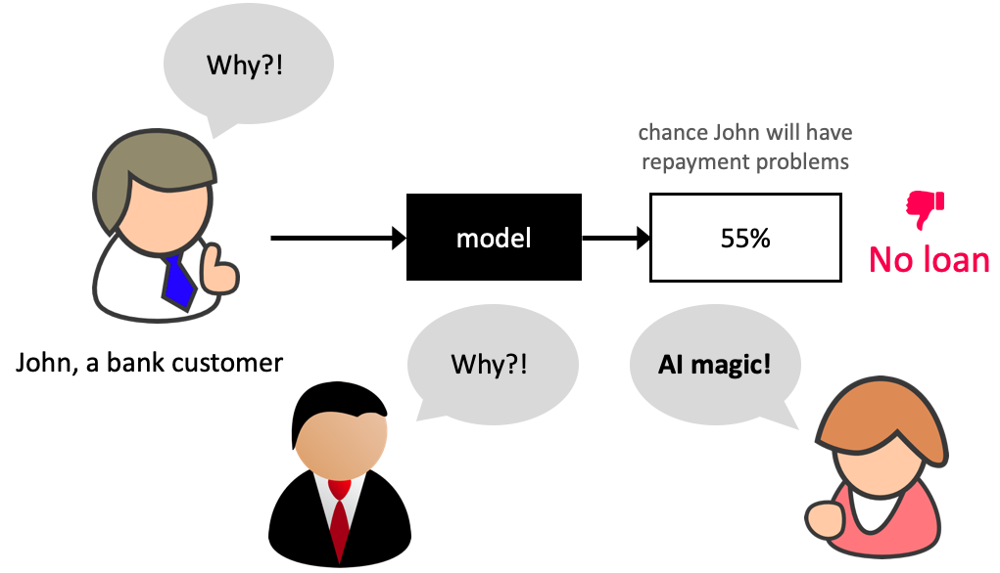
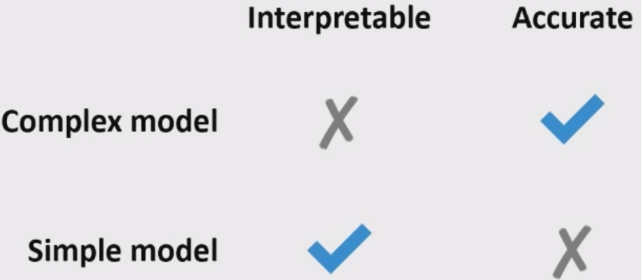
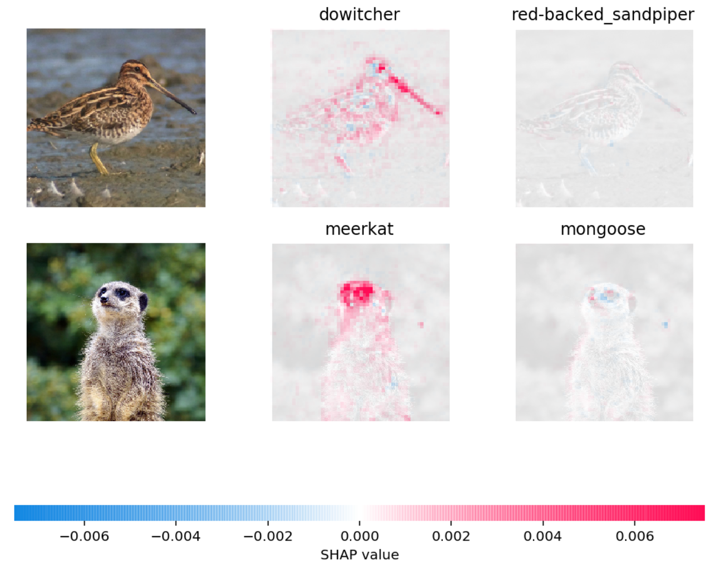

Lecture 12: Feature importances
Contents

Lecture 12: Feature importances#
UBC 2022-23
Instructor: Varada Kolhatkar
Imports, announcements, LOs#
Imports#
import os
import string
import sys
from collections import deque
import matplotlib.pyplot as plt
import numpy as np
import pandas as pd
sys.path.append("code/.")
import seaborn as sns
from plotting_functions import *
from sklearn import datasets
from sklearn.compose import ColumnTransformer, make_column_transformer
from sklearn.dummy import DummyClassifier, DummyRegressor
from sklearn.ensemble import RandomForestClassifier, RandomForestRegressor
from sklearn.impute import SimpleImputer
from sklearn.linear_model import LogisticRegression, Ridge
from sklearn.model_selection import (
GridSearchCV,
RandomizedSearchCV,
cross_val_score,
cross_validate,
train_test_split,
)
from sklearn.pipeline import Pipeline, make_pipeline
from sklearn.preprocessing import OneHotEncoder, OrdinalEncoder, StandardScaler
from sklearn.svm import SVC, SVR
from sklearn.tree import DecisionTreeClassifier
from utils import *
%matplotlib inline
Learning outcomes#
From this lecture, students are expected to be able to:
Interpret the coefficients of linear regression for ordinal, one-hot encoded categorical, and scaled numeric features.
Explain why interpretability is important in ML.
Use
feature_importances_attribute ofsklearnmodels and interpret its output.Use
eli5to get feature importances of nonsklearnmodels and interpret its output.Apply SHAP to assess feature importances and interpret model predictions.
Explain force plot, summary plot, and dependence plot produced with shapely values.
import warnings
warnings.simplefilter(action="ignore", category=FutureWarning)
Announcement#
Midterm is next week.
Bring your laptop. Make sure that it’s fully charged.
Bring your UBC ID Card.
HW5 is available.
My OH on Thursday has been cancelled. I’ll hold OH on Tuesday instead.
Data#
In the first part of this lecture, we’ll be using Kaggle House Prices dataset, the dataset we used in lecture 10. As usual, to run this notebook you’ll need to download the data. Unzip the data into a subdirectory called data. For this dataset, train and test have already been separated. We’ll be working with the train portion in this lecture.
df = pd.read_csv("data/housing-kaggle/train.csv")
train_df, test_df = train_test_split(df, test_size=0.10, random_state=123)
train_df.head()
| Id | MSSubClass | MSZoning | LotFrontage | LotArea | Street | Alley | LotShape | LandContour | Utilities | ... | PoolArea | PoolQC | Fence | MiscFeature | MiscVal | MoSold | YrSold | SaleType | SaleCondition | SalePrice | |
|---|---|---|---|---|---|---|---|---|---|---|---|---|---|---|---|---|---|---|---|---|---|
| 302 | 303 | 20 | RL | 118.0 | 13704 | Pave | NaN | IR1 | Lvl | AllPub | ... | 0 | NaN | NaN | NaN | 0 | 1 | 2006 | WD | Normal | 205000 |
| 767 | 768 | 50 | RL | 75.0 | 12508 | Pave | NaN | IR1 | Lvl | AllPub | ... | 0 | NaN | NaN | Shed | 1300 | 7 | 2008 | WD | Normal | 160000 |
| 429 | 430 | 20 | RL | 130.0 | 11457 | Pave | NaN | IR1 | Lvl | AllPub | ... | 0 | NaN | NaN | NaN | 0 | 3 | 2009 | WD | Normal | 175000 |
| 1139 | 1140 | 30 | RL | 98.0 | 8731 | Pave | NaN | IR1 | Lvl | AllPub | ... | 0 | NaN | NaN | NaN | 0 | 5 | 2007 | WD | Normal | 144000 |
| 558 | 559 | 60 | RL | 57.0 | 21872 | Pave | NaN | IR2 | HLS | AllPub | ... | 0 | NaN | NaN | NaN | 0 | 8 | 2008 | WD | Normal | 175000 |
5 rows × 81 columns
The prediction task is predicting
SalePricegiven features related to properties.Note that the target is numeric, not categorical.
train_df.shape
(1314, 81)
Let’s separate X and y#
X_train = train_df.drop(columns=["SalePrice"])
y_train = train_df["SalePrice"]
X_test = test_df.drop(columns=["SalePrice"])
y_test = test_df["SalePrice"]
Let’s identify feature types#
drop_features = ["Id"]
numeric_features = [
"BedroomAbvGr",
"KitchenAbvGr",
"LotFrontage",
"LotArea",
"OverallQual",
"OverallCond",
"YearBuilt",
"YearRemodAdd",
"MasVnrArea",
"BsmtFinSF1",
"BsmtFinSF2",
"BsmtUnfSF",
"TotalBsmtSF",
"1stFlrSF",
"2ndFlrSF",
"LowQualFinSF",
"GrLivArea",
"BsmtFullBath",
"BsmtHalfBath",
"FullBath",
"HalfBath",
"TotRmsAbvGrd",
"Fireplaces",
"GarageYrBlt",
"GarageCars",
"GarageArea",
"WoodDeckSF",
"OpenPorchSF",
"EnclosedPorch",
"3SsnPorch",
"ScreenPorch",
"PoolArea",
"MiscVal",
"YrSold",
]
ordinal_features_reg = [
"ExterQual",
"ExterCond",
"BsmtQual",
"BsmtCond",
"HeatingQC",
"KitchenQual",
"FireplaceQu",
"GarageQual",
"GarageCond",
"PoolQC",
]
ordering = [
"Po",
"Fa",
"TA",
"Gd",
"Ex",
] # if N/A it will just impute something, per below
ordering_ordinal_reg = [ordering] * len(ordinal_features_reg)
ordering_ordinal_reg
[['Po', 'Fa', 'TA', 'Gd', 'Ex'],
['Po', 'Fa', 'TA', 'Gd', 'Ex'],
['Po', 'Fa', 'TA', 'Gd', 'Ex'],
['Po', 'Fa', 'TA', 'Gd', 'Ex'],
['Po', 'Fa', 'TA', 'Gd', 'Ex'],
['Po', 'Fa', 'TA', 'Gd', 'Ex'],
['Po', 'Fa', 'TA', 'Gd', 'Ex'],
['Po', 'Fa', 'TA', 'Gd', 'Ex'],
['Po', 'Fa', 'TA', 'Gd', 'Ex'],
['Po', 'Fa', 'TA', 'Gd', 'Ex']]
ordinal_features_oth = [
"BsmtExposure",
"BsmtFinType1",
"BsmtFinType2",
"Functional",
"Fence",
]
ordering_ordinal_oth = [
["NA", "No", "Mn", "Av", "Gd"],
["NA", "Unf", "LwQ", "Rec", "BLQ", "ALQ", "GLQ"],
["NA", "Unf", "LwQ", "Rec", "BLQ", "ALQ", "GLQ"],
["Sal", "Sev", "Maj2", "Maj1", "Mod", "Min2", "Min1", "Typ"],
["NA", "MnWw", "GdWo", "MnPrv", "GdPrv"],
]
categorical_features = list(
set(X_train.columns)
- set(numeric_features)
- set(ordinal_features_reg)
- set(ordinal_features_oth)
- set(drop_features)
)
categorical_features
['Exterior1st',
'MasVnrType',
'Utilities',
'BldgType',
'LandSlope',
'MiscFeature',
'SaleType',
'Exterior2nd',
'GarageFinish',
'RoofStyle',
'RoofMatl',
'LotShape',
'Alley',
'Heating',
'Electrical',
'CentralAir',
'GarageType',
'Condition1',
'SaleCondition',
'LandContour',
'LotConfig',
'HouseStyle',
'Condition2',
'MSSubClass',
'Neighborhood',
'MoSold',
'MSZoning',
'Street',
'Foundation',
'PavedDrive']
from sklearn.compose import ColumnTransformer, make_column_transformer
numeric_transformer = make_pipeline(SimpleImputer(strategy="median"), StandardScaler())
ordinal_transformer_reg = make_pipeline(
SimpleImputer(strategy="most_frequent"),
OrdinalEncoder(categories=ordering_ordinal_reg),
)
ordinal_transformer_oth = make_pipeline(
SimpleImputer(strategy="most_frequent"),
OrdinalEncoder(categories=ordering_ordinal_oth),
)
categorical_transformer = make_pipeline(
SimpleImputer(strategy="constant", fill_value="missing"),
OneHotEncoder(handle_unknown="ignore", sparse=False),
)
preprocessor = make_column_transformer(
("drop", drop_features),
(numeric_transformer, numeric_features),
(ordinal_transformer_reg, ordinal_features_reg),
(ordinal_transformer_oth, ordinal_features_oth),
(categorical_transformer, categorical_features),
)
preprocessor.fit(X_train)
preprocessor.named_transformers_
{'drop': 'drop',
'pipeline-1': Pipeline(steps=[('simpleimputer', SimpleImputer(strategy='median')),
('standardscaler', StandardScaler())]),
'pipeline-2': Pipeline(steps=[('simpleimputer', SimpleImputer(strategy='most_frequent')),
('ordinalencoder',
OrdinalEncoder(categories=[['Po', 'Fa', 'TA', 'Gd', 'Ex'],
['Po', 'Fa', 'TA', 'Gd', 'Ex'],
['Po', 'Fa', 'TA', 'Gd', 'Ex'],
['Po', 'Fa', 'TA', 'Gd', 'Ex'],
['Po', 'Fa', 'TA', 'Gd', 'Ex'],
['Po', 'Fa', 'TA', 'Gd', 'Ex'],
['Po', 'Fa', 'TA', 'Gd', 'Ex'],
['Po', 'Fa', 'TA', 'Gd', 'Ex'],
['Po', 'Fa', 'TA', 'Gd', 'Ex'],
['Po', 'Fa', 'TA', 'Gd', 'Ex']]))]),
'pipeline-3': Pipeline(steps=[('simpleimputer', SimpleImputer(strategy='most_frequent')),
('ordinalencoder',
OrdinalEncoder(categories=[['NA', 'No', 'Mn', 'Av', 'Gd'],
['NA', 'Unf', 'LwQ', 'Rec', 'BLQ',
'ALQ', 'GLQ'],
['NA', 'Unf', 'LwQ', 'Rec', 'BLQ',
'ALQ', 'GLQ'],
['Sal', 'Sev', 'Maj2', 'Maj1',
'Mod', 'Min2', 'Min1', 'Typ'],
['NA', 'MnWw', 'GdWo', 'MnPrv',
'GdPrv']]))]),
'pipeline-4': Pipeline(steps=[('simpleimputer',
SimpleImputer(fill_value='missing', strategy='constant')),
('onehotencoder',
OneHotEncoder(handle_unknown='ignore', sparse=False))])}
ohe_columns = list(
preprocessor.named_transformers_["pipeline-4"]
.named_steps["onehotencoder"]
.get_feature_names(categorical_features)
)
new_columns = (
numeric_features + ordinal_features_reg + ordinal_features_oth + ohe_columns
)
X_train_enc = pd.DataFrame(
preprocessor.transform(X_train), index=X_train.index, columns=new_columns
)
X_train_enc
| BedroomAbvGr | KitchenAbvGr | LotFrontage | LotArea | OverallQual | OverallCond | YearBuilt | YearRemodAdd | MasVnrArea | BsmtFinSF1 | ... | Street_Pave | Foundation_BrkTil | Foundation_CBlock | Foundation_PConc | Foundation_Slab | Foundation_Stone | Foundation_Wood | PavedDrive_N | PavedDrive_P | PavedDrive_Y | |
|---|---|---|---|---|---|---|---|---|---|---|---|---|---|---|---|---|---|---|---|---|---|
| 302 | 0.154795 | -0.222647 | 2.312501 | 0.381428 | 0.663680 | -0.512408 | 0.993969 | 0.840492 | 0.269972 | -0.961498 | ... | 1.0 | 0.0 | 0.0 | 1.0 | 0.0 | 0.0 | 0.0 | 0.0 | 0.0 | 1.0 |
| 767 | 1.372763 | -0.222647 | 0.260890 | 0.248457 | -0.054669 | 1.285467 | -1.026793 | 0.016525 | -0.573129 | 0.476092 | ... | 1.0 | 0.0 | 1.0 | 0.0 | 0.0 | 0.0 | 0.0 | 0.0 | 0.0 | 1.0 |
| 429 | 0.154795 | -0.222647 | 2.885044 | 0.131607 | -0.054669 | -0.512408 | 0.563314 | 0.161931 | -0.573129 | 1.227559 | ... | 1.0 | 0.0 | 1.0 | 0.0 | 0.0 | 0.0 | 0.0 | 0.0 | 0.0 | 1.0 |
| 1139 | 0.154795 | -0.222647 | 1.358264 | -0.171468 | -0.773017 | -0.512408 | -1.689338 | -1.679877 | -0.573129 | 0.443419 | ... | 1.0 | 1.0 | 0.0 | 0.0 | 0.0 | 0.0 | 0.0 | 0.0 | 0.0 | 1.0 |
| 558 | 0.154795 | -0.222647 | -0.597924 | 1.289541 | 0.663680 | -0.512408 | 0.828332 | 0.598149 | -0.573129 | 0.354114 | ... | 1.0 | 0.0 | 0.0 | 1.0 | 0.0 | 0.0 | 0.0 | 0.0 | 0.0 | 1.0 |
| ... | ... | ... | ... | ... | ... | ... | ... | ... | ... | ... | ... | ... | ... | ... | ... | ... | ... | ... | ... | ... | ... |
| 1041 | 1.372763 | -0.222647 | -0.025381 | -0.127107 | -0.054669 | 2.184405 | -0.165485 | 0.743555 | 0.843281 | -0.090231 | ... | 1.0 | 0.0 | 1.0 | 0.0 | 0.0 | 0.0 | 0.0 | 0.0 | 0.0 | 1.0 |
| 1122 | 0.154795 | -0.222647 | -0.025381 | -0.149788 | -1.491366 | -2.310284 | -0.496757 | -1.389065 | -0.573129 | -0.961498 | ... | 1.0 | 0.0 | 1.0 | 0.0 | 0.0 | 0.0 | 0.0 | 0.0 | 0.0 | 1.0 |
| 1346 | 0.154795 | -0.222647 | -0.025381 | 1.168244 | 0.663680 | 1.285467 | -0.099230 | 0.888961 | -0.573129 | -0.314582 | ... | 1.0 | 0.0 | 1.0 | 0.0 | 0.0 | 0.0 | 0.0 | 0.0 | 0.0 | 1.0 |
| 1406 | -1.063173 | -0.222647 | 0.022331 | -0.203265 | -0.773017 | 1.285467 | 0.033279 | 1.082835 | -0.573129 | 0.467379 | ... | 1.0 | 0.0 | 1.0 | 0.0 | 0.0 | 0.0 | 0.0 | 0.0 | 0.0 | 1.0 |
| 1389 | 0.154795 | -0.222647 | -0.454788 | -0.475099 | -0.054669 | 0.386530 | -0.993666 | -1.679877 | -0.573129 | -0.144686 | ... | 1.0 | 1.0 | 0.0 | 0.0 | 0.0 | 0.0 | 0.0 | 0.0 | 0.0 | 1.0 |
1314 rows × 263 columns
X_train_enc.shape
(1314, 263)
lr_pipe = make_pipeline(preprocessor, Ridge())
scores = cross_validate(lr_pipe, X_train, y_train);
pd.DataFrame(scores)
| fit_time | score_time | test_score | |
|---|---|---|---|
| 0 | 0.017569 | 0.005400 | 0.834450 |
| 1 | 0.018072 | 0.005120 | 0.810031 |
| 2 | 0.017607 | 0.005100 | 0.831653 |
| 3 | 0.018748 | 0.007358 | 0.843537 |
| 4 | 0.018675 | 0.005405 | 0.548802 |
How does output depend upon the input?#
How does the prediction change as a function of a particular feature?
If the model is bad interpretability does not make sense.
SimpleFeature correlations#
Let’s look at the correlations between various features with other features and the target in our encoded data (first row/column).
In simple terms here is how you can interpret correlations between two variables \(X\) and \(Y\):
If \(Y\) goes up when \(X\) goes up, we say \(X\) and \(Y\) are positively correlated.
If \(Y\) goes down when \(X\) goes up, we say \(X\) and \(Y\) are negatively correlated.
If \(Y\) is unchanged when \(X\) changes, we say \(X\) and \(Y\) are uncorrelated.
cor = pd.concat((y_train, X_train_enc), axis=1).iloc[:, :15].corr()
plt.figure(figsize=(12, 12))
sns.set(font_scale=0.8)
sns.heatmap(cor, annot=True, cmap=plt.cm.Blues);
We can immediately see that
SalePriceis highly correlated withOverallQual.This is an early hint that
OverallQualis a useful feature in predictingSalePrice.However, this approach is extremely simplistic.
It only looks at each feature in isolation.
It only looks at linear associations:
What if
SalePriceis high whenBsmtFullBathis 2 or 3, but low when it’s 0, 1, or 4? They might seem uncorrelated.
cor = pd.concat((y_train, X_train_enc), axis=1).iloc[:, 10:15].corr()
plt.figure(figsize=(4, 4))
sns.set(font_scale=0.8)
sns.heatmap(cor, annot=True, cmap=plt.cm.Blues);
Looking at this diagram also tells us the relationship between features.
For example,
1stFlrSFandTotalBsmtSFare highly correlated.Do we need both of them?
If our model says
1stFlrSFis very important andTotalBsmtSFis very unimportant, do we trust those values?Maybe
TotalBsmtSFonly “becomes important” if1stFlrSFis removed.Sometimes the opposite happens: a feature only becomes important if another feature is added.
Feature importances in linear models#
With linear regression we can look at the coefficients for each feature.
Overall idea: predicted price = intercept + \(\sum_i\) coefficient i \(\times\) feature i.
lr = make_pipeline(preprocessor, Ridge())
lr.fit(X_train, y_train);
Let’s look at the coefficients.
lr_coefs = pd.DataFrame(data=lr.named_steps['ridge'].coef_,
index=new_columns,
columns=["Coefficient"])
lr_coefs.head(20)
| Coefficient | |
|---|---|
| BedroomAbvGr | -3723.741570 |
| KitchenAbvGr | -4580.204576 |
| LotFrontage | -1578.664421 |
| LotArea | 5109.356718 |
| OverallQual | 12487.561839 |
| OverallCond | 4855.535334 |
| YearBuilt | 4226.684842 |
| YearRemodAdd | 324.664715 |
| MasVnrArea | 5251.325210 |
| BsmtFinSF1 | 3667.172851 |
| BsmtFinSF2 | 583.114880 |
| BsmtUnfSF | -1266.614671 |
| TotalBsmtSF | 2751.084018 |
| 1stFlrSF | 6736.788904 |
| 2ndFlrSF | 13409.901084 |
| LowQualFinSF | -448.424132 |
| GrLivArea | 15988.182407 |
| BsmtFullBath | 2299.227266 |
| BsmtHalfBath | 500.169112 |
| FullBath | 2831.811467 |
Interpreting coefficients of different types of features.#
Ordinal features#
The ordinal features are easiest to interpret.
print(ordinal_features_reg)
['ExterQual', 'ExterCond', 'BsmtQual', 'BsmtCond', 'HeatingQC', 'KitchenQual', 'FireplaceQu', 'GarageQual', 'GarageCond', 'PoolQC']
lr_coefs.loc["ExterQual"]
Coefficient 4195.671512
Name: ExterQual, dtype: float64
Increasing by one category of exterior quality (e.g. good -> excellent) increases the predicted price by \(\sim\$4195\).
Wow, that’s a lot!
Remember this is just what the model has learned. It doesn’t tell us how the world works.
one_example = X_test[:1]
one_example[["ExterQual"]]
| ExterQual | |
|---|---|
| 147 | Gd |
Let’s perturb the example and change ExterQual to Ex.
one_example_perturbed = one_example.copy()
one_example_perturbed["ExterQual"] = "Ex" # Change Gd to Ex
one_example_perturbed[["ExterQual"]]
| ExterQual | |
|---|---|
| 147 | Ex |
How does the prediction change after changing ExterQual from Gd to Ex?
print("Prediction on the original example: ", lr.predict(one_example))
print("Prediction on the perturbed example: ", lr.predict(one_example_perturbed))
print(
"After changing ExterQual from Gd to Ex increased the prediction by: ",
lr.predict(one_example_perturbed) - lr.predict(one_example),
)
Prediction on the original example: [224795.63596803]
Prediction on the perturbed example: [228991.30748049]
After changing ExterQual from Gd to Ex increased the prediction by: [4195.67151247]
That’s exactly the learned coefficient for ExterQual!
lr_coefs.loc["ExterQual"]
Coefficient 4195.671512
Name: ExterQual, dtype: float64
So our interpretation is correct!
Increasing by one category of exterior quality (e.g. good -> excellent) increases the predicted price by \(\sim\$4195\).
Categorical features#
What about the categorical features?
We have created a number of columns for each category with OHE and each category gets it’s own coefficient.
print(categorical_features)
['Exterior1st', 'MasVnrType', 'Utilities', 'BldgType', 'LandSlope', 'MiscFeature', 'SaleType', 'Exterior2nd', 'GarageFinish', 'RoofStyle', 'RoofMatl', 'LotShape', 'Alley', 'Heating', 'Electrical', 'CentralAir', 'GarageType', 'Condition1', 'SaleCondition', 'LandContour', 'LotConfig', 'HouseStyle', 'Condition2', 'MSSubClass', 'Neighborhood', 'MoSold', 'MSZoning', 'Street', 'Foundation', 'PavedDrive']
lr_coefs_landslope = lr_coefs[lr_coefs.index.str.startswith("LandSlope")]
lr_coefs_landslope
| Coefficient | |
|---|---|
| LandSlope_Gtl | 457.197456 |
| LandSlope_Mod | 7420.208381 |
| LandSlope_Sev | -7877.405837 |
We can talk about switching from one of these categories to another by picking a “reference” category:
lr_coefs_landslope - lr_coefs_landslope.loc["LandSlope_Gtl"]
| Coefficient | |
|---|---|
| LandSlope_Gtl | 0.000000 |
| LandSlope_Mod | 6963.010925 |
| LandSlope_Sev | -8334.603292 |
If you change the category from
LandSlope_GtltoLandSlope_Modthe prediction price goes up by \(\sim\$6963\)If you change the category from
LandSlope_GtltoLandSlope_Sevthe prediction price goes down by \(\sim\$8334\)
Note that this might not make sense in the real world but this is what our model decided to learn given this small amount of data.
lr_coefs.sort_values(by="Coefficient")
| Coefficient | |
|---|---|
| RoofMatl_ClyTile | -191129.774314 |
| Condition2_PosN | -105552.840565 |
| Heating_OthW | -27260.681308 |
| MSZoning_C (all) | -21990.746193 |
| Exterior1st_ImStucc | -19393.964621 |
| ... | ... |
| PoolQC | 34217.656047 |
| RoofMatl_CompShg | 36525.980874 |
| Neighborhood_NridgHt | 37532.643270 |
| Neighborhood_StoneBr | 39993.978324 |
| RoofMatl_WdShngl | 83646.711008 |
263 rows × 1 columns
For example, the above coefficient says that “If the roof is made of clay or tile, the predicted price is \$191K less”?
Do we believe these interpretations??
Do we believe this is how the predictions are being computed? Yes.
Do we believe that this is how the world works? No.
Note
If you did drop='first' (we didn’t) then you already have a reference class, and all the values are with respect to that one. The interpretation depends on whether we did drop='first', hence the hassle.
Interpreting coefficients of numeric features#
Let’s look at coefficients of PoolArea, LotFrontage, LotArea.
lr_coefs.loc[["PoolArea", "LotFrontage", "LotArea"]]
| Coefficient | |
|---|---|
| PoolArea | 2822.370476 |
| LotFrontage | -1578.664421 |
| LotArea | 5109.356718 |
Intuition:
Tricky because numeric features are scaled!
Increasing
PoolAreaby 1 scaled unit increases the predicted price by \(\sim\$2822\).Increasing
LotAreaby 1 scaled unit increases the predicted price by \(\sim\$5109\).Increasing
LotFrontageby 1 scaled unit decreases the predicted price by \(\sim\$1578\).
Does that sound reasonable?
For
PoolAreaandLotArea, yes.For
LotFrontage, that’s surprising. Something positive would have made more sense?
It’s not the case that LotFrontage is correlated with some other variable, which might have a larger positive coefficient.
BTW, let’s make sure the predictions behave as expected:
Example showing how can we interpret coefficients of scaled features.#
What’s one scaled unit for
LotArea?The scaler subtracted the mean and divided by the standard deviation.
The division actually changed the scale!
For the unit conversion, we don’t care about the subtraction, but only the scaling.
scaler = preprocessor.named_transformers_["pipeline-1"]["standardscaler"]
lr_scales = pd.DataFrame(
data=np.sqrt(scaler.var_), index=numeric_features, columns=["Scale"]
)
lr_scales.head()
| Scale | |
|---|---|
| BedroomAbvGr | 0.821040 |
| KitchenAbvGr | 0.218760 |
| LotFrontage | 20.959139 |
| LotArea | 8994.471032 |
| OverallQual | 1.392082 |
It seems like
LotAreawas divided by 8994.471032 sqft.
lr_coefs.loc["LotArea", "Coefficient"]
5109.356718094055
lr_coefs.loc[["LotArea"]]
| Coefficient | |
|---|---|
| LotArea | 5109.356718 |
The coefficient tells us that if we increase the scaled
LotAreaby one scaled unit the price would go up by \(\approx\$5109\).One scaled unit represents \(\sim 8994\) sq feet.
So if I increase original
LotAreaby one square foot then the predicted price would go up by this amount:
5109.356718094072 / 8994.471032
0.5680552752814816
Let’s examine whether this works as expected. In other words
one_example = X_test[:1]
one_example
| Id | MSSubClass | MSZoning | LotFrontage | LotArea | Street | Alley | LotShape | LandContour | Utilities | ... | ScreenPorch | PoolArea | PoolQC | Fence | MiscFeature | MiscVal | MoSold | YrSold | SaleType | SaleCondition | |
|---|---|---|---|---|---|---|---|---|---|---|---|---|---|---|---|---|---|---|---|---|---|
| 147 | 148 | 60 | RL | NaN | 9505 | Pave | NaN | IR1 | Lvl | AllPub | ... | 0 | 0 | NaN | NaN | NaN | 0 | 5 | 2010 | WD | Normal |
1 rows × 80 columns
Let’s perturb the example and add 1 to the LotArea.
one_example_perturbed = one_example.copy()
one_example_perturbed["LotArea"] += 1 # add 1 to the LotArea
one_example_perturbed
| Id | MSSubClass | MSZoning | LotFrontage | LotArea | Street | Alley | LotShape | LandContour | Utilities | ... | ScreenPorch | PoolArea | PoolQC | Fence | MiscFeature | MiscVal | MoSold | YrSold | SaleType | SaleCondition | |
|---|---|---|---|---|---|---|---|---|---|---|---|---|---|---|---|---|---|---|---|---|---|
| 147 | 148 | 60 | RL | NaN | 9506 | Pave | NaN | IR1 | Lvl | AllPub | ... | 0 | 0 | NaN | NaN | NaN | 0 | 5 | 2010 | WD | Normal |
1 rows × 80 columns
Prediction on the original example.
lr.predict(one_example)
array([224795.63596803])
Prediction on the perturbed example.
lr.predict(one_example_perturbed)
array([224796.2040233])
What’s the difference between prediction?
Does the difference make sense given the coefficient of the feature?
lr.predict(one_example_perturbed) - lr.predict(one_example)
array([0.56805528])
lr_coefs.loc[["LotArea"]]
| Coefficient | |
|---|---|
| LotArea | 5109.356718 |
That said don’t read too much into these coefficients without statistical training.
Interim summary#
Correlation among features might make coefficients completely uninterpretable.
Fairly straightforward to interpret coefficients of ordinal features.
In categorical features, it’s often helpful to consider one category as a reference point and think about relative importance.
For numeric features, relative importance is meaningful after scaling.
You have to be careful about the scale of the feature when interpreting the coefficients.
Remember that explaining the model \(\neq\) explaining the data.
The coefficients tell us only about the model and they might not accurately reflect the data.
from yellowbrick.model_selection import rfecv
from sklearn.metrics import r2_score
from sklearn.model_selection import StratifiedKFold
visualizer = rfecv(Ridge(), X=X_train_enc, y=y_train, cv=5, scoring='r2')
---------------------------------------------------------------------------
KeyboardInterrupt Traceback (most recent call last)
Cell In [46], line 5
2 from sklearn.metrics import r2_score
3 from sklearn.model_selection import StratifiedKFold
----> 5 visualizer = rfecv(Ridge(), X=X_train_enc, y=y_train, cv=5, scoring='r2')
File ~/opt/miniconda3/envs/cpsc330/lib/python3.10/site-packages/yellowbrick/model_selection/rfecv.py:357, in rfecv(estimator, X, y, ax, step, groups, cv, scoring, show, **kwargs)
352 oz = RFECV(
353 estimator, ax=ax, step=step, groups=groups, cv=cv, scoring=scoring, show=show
354 )
356 # Fit and show the visualizer
--> 357 oz.fit(X, y)
359 if show:
360 oz.show()
File ~/opt/miniconda3/envs/cpsc330/lib/python3.10/site-packages/yellowbrick/model_selection/rfecv.py:197, in RFECV.fit(self, X, y)
195 for n_features_to_select in self.n_feature_subsets_:
196 rfe.set_params(n_features_to_select=n_features_to_select)
--> 197 scores.append(cross_val_score(rfe, X, y, **cv_params))
199 # Convert scores to array
200 self.cv_scores_ = np.array(scores)
File ~/opt/miniconda3/envs/cpsc330/lib/python3.10/site-packages/sklearn/model_selection/_validation.py:515, in cross_val_score(estimator, X, y, groups, scoring, cv, n_jobs, verbose, fit_params, pre_dispatch, error_score)
512 # To ensure multimetric format is not supported
513 scorer = check_scoring(estimator, scoring=scoring)
--> 515 cv_results = cross_validate(
516 estimator=estimator,
517 X=X,
518 y=y,
519 groups=groups,
520 scoring={"score": scorer},
521 cv=cv,
522 n_jobs=n_jobs,
523 verbose=verbose,
524 fit_params=fit_params,
525 pre_dispatch=pre_dispatch,
526 error_score=error_score,
527 )
528 return cv_results["test_score"]
File ~/opt/miniconda3/envs/cpsc330/lib/python3.10/site-packages/sklearn/model_selection/_validation.py:266, in cross_validate(estimator, X, y, groups, scoring, cv, n_jobs, verbose, fit_params, pre_dispatch, return_train_score, return_estimator, error_score)
263 # We clone the estimator to make sure that all the folds are
264 # independent, and that it is pickle-able.
265 parallel = Parallel(n_jobs=n_jobs, verbose=verbose, pre_dispatch=pre_dispatch)
--> 266 results = parallel(
267 delayed(_fit_and_score)(
268 clone(estimator),
269 X,
270 y,
271 scorers,
272 train,
273 test,
274 verbose,
275 None,
276 fit_params,
277 return_train_score=return_train_score,
278 return_times=True,
279 return_estimator=return_estimator,
280 error_score=error_score,
281 )
282 for train, test in cv.split(X, y, groups)
283 )
285 _warn_or_raise_about_fit_failures(results, error_score)
287 # For callabe scoring, the return type is only know after calling. If the
288 # return type is a dictionary, the error scores can now be inserted with
289 # the correct key.
File ~/opt/miniconda3/envs/cpsc330/lib/python3.10/site-packages/joblib/parallel.py:1043, in Parallel.__call__(self, iterable)
1034 try:
1035 # Only set self._iterating to True if at least a batch
1036 # was dispatched. In particular this covers the edge
(...)
1040 # was very quick and its callback already dispatched all the
1041 # remaining jobs.
1042 self._iterating = False
-> 1043 if self.dispatch_one_batch(iterator):
1044 self._iterating = self._original_iterator is not None
1046 while self.dispatch_one_batch(iterator):
File ~/opt/miniconda3/envs/cpsc330/lib/python3.10/site-packages/joblib/parallel.py:861, in Parallel.dispatch_one_batch(self, iterator)
859 return False
860 else:
--> 861 self._dispatch(tasks)
862 return True
File ~/opt/miniconda3/envs/cpsc330/lib/python3.10/site-packages/joblib/parallel.py:779, in Parallel._dispatch(self, batch)
777 with self._lock:
778 job_idx = len(self._jobs)
--> 779 job = self._backend.apply_async(batch, callback=cb)
780 # A job can complete so quickly than its callback is
781 # called before we get here, causing self._jobs to
782 # grow. To ensure correct results ordering, .insert is
783 # used (rather than .append) in the following line
784 self._jobs.insert(job_idx, job)
File ~/opt/miniconda3/envs/cpsc330/lib/python3.10/site-packages/joblib/_parallel_backends.py:208, in SequentialBackend.apply_async(self, func, callback)
206 def apply_async(self, func, callback=None):
207 """Schedule a func to be run"""
--> 208 result = ImmediateResult(func)
209 if callback:
210 callback(result)
File ~/opt/miniconda3/envs/cpsc330/lib/python3.10/site-packages/joblib/_parallel_backends.py:572, in ImmediateResult.__init__(self, batch)
569 def __init__(self, batch):
570 # Don't delay the application, to avoid keeping the input
571 # arguments in memory
--> 572 self.results = batch()
File ~/opt/miniconda3/envs/cpsc330/lib/python3.10/site-packages/joblib/parallel.py:262, in BatchedCalls.__call__(self)
258 def __call__(self):
259 # Set the default nested backend to self._backend but do not set the
260 # change the default number of processes to -1
261 with parallel_backend(self._backend, n_jobs=self._n_jobs):
--> 262 return [func(*args, **kwargs)
263 for func, args, kwargs in self.items]
File ~/opt/miniconda3/envs/cpsc330/lib/python3.10/site-packages/joblib/parallel.py:262, in <listcomp>(.0)
258 def __call__(self):
259 # Set the default nested backend to self._backend but do not set the
260 # change the default number of processes to -1
261 with parallel_backend(self._backend, n_jobs=self._n_jobs):
--> 262 return [func(*args, **kwargs)
263 for func, args, kwargs in self.items]
File ~/opt/miniconda3/envs/cpsc330/lib/python3.10/site-packages/sklearn/utils/fixes.py:117, in _FuncWrapper.__call__(self, *args, **kwargs)
115 def __call__(self, *args, **kwargs):
116 with config_context(**self.config):
--> 117 return self.function(*args, **kwargs)
File ~/opt/miniconda3/envs/cpsc330/lib/python3.10/site-packages/sklearn/model_selection/_validation.py:686, in _fit_and_score(estimator, X, y, scorer, train, test, verbose, parameters, fit_params, return_train_score, return_parameters, return_n_test_samples, return_times, return_estimator, split_progress, candidate_progress, error_score)
684 estimator.fit(X_train, **fit_params)
685 else:
--> 686 estimator.fit(X_train, y_train, **fit_params)
688 except Exception:
689 # Note fit time as time until error
690 fit_time = time.time() - start_time
File ~/opt/miniconda3/envs/cpsc330/lib/python3.10/site-packages/sklearn/feature_selection/_rfe.py:235, in RFE.fit(self, X, y, **fit_params)
215 def fit(self, X, y, **fit_params):
216 """Fit the RFE model and then the underlying estimator on the selected features.
217
218 Parameters
(...)
233 Fitted estimator.
234 """
--> 235 return self._fit(X, y, **fit_params)
File ~/opt/miniconda3/envs/cpsc330/lib/python3.10/site-packages/sklearn/feature_selection/_rfe.py:296, in RFE._fit(self, X, y, step_score, **fit_params)
293 if self.verbose > 0:
294 print("Fitting estimator with %d features." % np.sum(support_))
--> 296 estimator.fit(X[:, features], y, **fit_params)
298 # Get importance and rank them
299 importances = _get_feature_importances(
300 estimator,
301 self.importance_getter,
302 transform_func="square",
303 )
File ~/opt/miniconda3/envs/cpsc330/lib/python3.10/site-packages/sklearn/linear_model/_ridge.py:1130, in Ridge.fit(self, X, y, sample_weight)
1121 _accept_sparse = _get_valid_accept_sparse(sparse.issparse(X), self.solver)
1122 X, y = self._validate_data(
1123 X,
1124 y,
(...)
1128 y_numeric=True,
1129 )
-> 1130 return super().fit(X, y, sample_weight=sample_weight)
File ~/opt/miniconda3/envs/cpsc330/lib/python3.10/site-packages/sklearn/linear_model/_ridge.py:889, in _BaseRidge.fit(self, X, y, sample_weight)
885 else:
886 # for dense matrices or when intercept is set to 0
887 params = {}
--> 889 self.coef_, self.n_iter_ = _ridge_regression(
890 X,
891 y,
892 alpha=self.alpha,
893 sample_weight=sample_weight,
894 max_iter=self.max_iter,
895 tol=self.tol,
896 solver=solver,
897 positive=self.positive,
898 random_state=self.random_state,
899 return_n_iter=True,
900 return_intercept=False,
901 check_input=False,
902 fit_intercept=self.fit_intercept,
903 **params,
904 )
905 self._set_intercept(X_offset, y_offset, X_scale)
907 return self
File ~/opt/miniconda3/envs/cpsc330/lib/python3.10/site-packages/sklearn/linear_model/_ridge.py:699, in _ridge_regression(X, y, alpha, sample_weight, solver, max_iter, tol, verbose, positive, random_state, return_n_iter, return_intercept, X_scale, X_offset, check_input, fit_intercept)
697 else:
698 try:
--> 699 coef = _solve_cholesky(X, y, alpha)
700 except linalg.LinAlgError:
701 # use SVD solver if matrix is singular
702 solver = "svd"
File ~/opt/miniconda3/envs/cpsc330/lib/python3.10/site-packages/sklearn/linear_model/_ridge.py:205, in _solve_cholesky(X, y, alpha)
202 n_features = X.shape[1]
203 n_targets = y.shape[1]
--> 205 A = safe_sparse_dot(X.T, X, dense_output=True)
206 Xy = safe_sparse_dot(X.T, y, dense_output=True)
208 one_alpha = np.array_equal(alpha, len(alpha) * [alpha[0]])
File ~/opt/miniconda3/envs/cpsc330/lib/python3.10/site-packages/sklearn/utils/extmath.py:155, in safe_sparse_dot(a, b, dense_output)
151 else:
152 ret = a @ b
154 if (
--> 155 sparse.issparse(a)
156 and sparse.issparse(b)
157 and dense_output
158 and hasattr(ret, "toarray")
159 ):
160 return ret.toarray()
161 return ret
File ~/opt/miniconda3/envs/cpsc330/lib/python3.10/site-packages/scipy/sparse/_base.py:1301, in isspmatrix(x)
1297 else:
1298 return np.zeros(self.shape, dtype=self.dtype, order=order)
-> 1301 def isspmatrix(x):
1302 """Is x of a sparse matrix type?
1303
1304 Parameters
(...)
1326 False
1327 """
1328 return isinstance(x, spmatrix)
KeyboardInterrupt:
Transparency and explainability of ML models#

What if it’s our Eva instead of John whose loan application gets rejected?

Discussion#
If you have a machine learning model which gives you 98% cross-validation accuracy and 97% test accuracy on a reasonable sized train and test data on the task of your interest.
Is it OK to just trust the model and ignore why it made a certain prediction?
Discuss scenarios where this might be problematic.
Why do we care about transparency and interpretability?#
Transparency of ML model predictions is crucial in many applications such as banking, healthcare, and criminal justice.
It can be leveraged by domain experts to diagnose systematic errors and underlying biases of complex ML systems.
What is model interpretability?#
In this lecture, our definition of model interpretability will be looking at feature importances.
There is more to interpretability than feature importances, but it’s a good start!
Resource:
Data#
Let’s work with the adult census data set from last lecture.
adult_df_large = pd.read_csv("data/adult.csv")
train_df, test_df = train_test_split(adult_df_large, test_size=0.2, random_state=42)
train_df = train_df.replace("?", np.NaN)
test_df = test_df.replace("?", np.NaN)
train_df.head()
train_df.describe()
numeric_features = ["capital.gain", "age", "capital.loss", "hours.per.week"]
categorical_features = [
"marital.status",
"native.country",
"relationship",
"occupation",
"workclass",
]
ordinal_features = ["education"]
binary_features = ["sex"]
drop_features = ["fnlwgt", "race", "education.num"]
target_column = "income"
education_levels = [
"Preschool",
"1st-4th",
"5th-6th",
"7th-8th",
"9th",
"10th",
"11th",
"12th",
"HS-grad",
"Prof-school",
"Assoc-voc",
"Assoc-acdm",
"Some-college",
"Bachelors",
"Masters",
"Doctorate",
]
assert set(education_levels) == set(train_df["education"].unique())
numeric_transformer = StandardScaler()
ordinal_transformer = OrdinalEncoder(categories=[education_levels], dtype=int)
binary_transformer = OneHotEncoder(drop="if_binary", dtype=int)
categorical_transformer = make_pipeline(
SimpleImputer(strategy="constant", fill_value="missing"),
OneHotEncoder(handle_unknown="ignore", sparse=False),
)
preprocessor = make_column_transformer(
(numeric_transformer, numeric_features),
(ordinal_transformer, ordinal_features),
(binary_transformer, binary_features),
(categorical_transformer, categorical_features),
("drop", drop_features),
)
X_train = train_df.drop(columns=[target_column])
y_train = train_df[target_column]
X_test = test_df.drop(columns=[target_column])
y_test = test_df[target_column]
preprocessor.fit(X_train, y_train)
ohe_feats = (
preprocessor.named_transformers_["pipeline"]
.named_steps["onehotencoder"]
.get_feature_names_out(categorical_features)
).tolist()
feature_names = numeric_features + ordinal_features + binary_features + ohe_feats
Do we have class imbalance?#
There is class imbalance. But without any context, both classes seem equally important.
Let’s use accuracy as our metric.
train_df["income"].value_counts(normalize=True)
scoring_metric = "accuracy"
Let’s store all the results in a dictionary called results.
results = {}
scoring_metric = "accuracy"
from lightgbm.sklearn import LGBMClassifier
pipe_lr = make_pipeline(
preprocessor, LogisticRegression(max_iter=2000, random_state=123)
)
pipe_rf = make_pipeline(preprocessor, RandomForestClassifier(random_state=123))
pipe_lgbm = make_pipeline(preprocessor, LGBMClassifier(random_state=123))
classifiers = {
"logistic regression": pipe_lr,
"random forest": pipe_rf,
"LightGBM": pipe_lgbm,
}
dummy = DummyClassifier(strategy="stratified")
results["Dummy"] = mean_std_cross_val_scores(
dummy, X_train, y_train, return_train_score=True, scoring=scoring_metric
)
for (name, model) in classifiers.items():
results[name] = mean_std_cross_val_scores(
model, X_train, y_train, return_train_score=True, scoring=scoring_metric
)
pd.DataFrame(results).T
Logistic regression is giving reasonable scores but not the best ones.
LightGBM is giving us the best CV scores.
Often simple models (e.g., linear models) are interpretable but not very accurate.
Complex models (e.g., LightGBM) are more accurate but less interpretable.

Break (5 min)#

Feature importances in linear models#
Simpler models are often more interpretable but less accurate.
Let’s create and fit a pipeline with preprocessor and logistic regression.
pipe_lr = make_pipeline(preprocessor, LogisticRegression(max_iter=2000, random_state=2))
pipe_lr.fit(X_train, y_train);
ohe_feature_names = (
pipe_rf.named_steps["columntransformer"]
.named_transformers_["pipeline"]
.named_steps["onehotencoder"]
.get_feature_names(categorical_features)
.tolist()
)
feature_names = (
numeric_features + ordinal_features + binary_features + ohe_feature_names
)
feature_names[:10]
data = {
"coefficient": pipe_lr.named_steps["logisticregression"].coef_[0].tolist(),
"magnitude": np.absolute(
pipe_lr.named_steps["logisticregression"].coef_[0].tolist()
),
}
coef_df = pd.DataFrame(data, index=feature_names).sort_values(
"magnitude", ascending=False
)
coef_df[:10]
Increasing
capital.gainis likely to push the prediction towards “>50k” income classWhereas occupation of private house service is likely to push the prediction towards “<=50K” income.
Can we get feature importances for non-linear models?
Model interpretability beyond linear models#
We will be looking at three ways for model interpretability.
Feature importances activity#
We have been talking about feature importances given by linear models. How about other models we have seen so far? What might be reasonable ways to calculate feature importances of other models we have seen so far?
Decision trees
Other tree-based models such as random forests or LightGBM
Linear SVMs
KNNs, RBF SVMs
sklearn feature_importances_#
Decision tre feature importances#
pipe_dt = make_pipeline(preprocessor, DecisionTreeClassifier(max_depth=3))
pipe_dt.fit(X_train, y_train);
data = {
"Importance": pipe_dt.named_steps["decisiontreeclassifier"].feature_importances_,
}
pd.DataFrame(data=data, index=feature_names,).sort_values(
by="Importance", ascending=False
)[:10]
display_tree(feature_names, pipe_dt.named_steps["decisiontreeclassifier"], counts=True)
Let’s create and fit a pipeline with preprocessor and random forest.
Random forest feature importances#
pipe_rf = make_pipeline(preprocessor, RandomForestClassifier(random_state=2))
pipe_rf.fit(X_train, y_train);
Which features are driving the predictions the most?
data = {
"Importance": pipe_rf.named_steps["randomforestclassifier"].feature_importances_,
}
rf_imp_df = pd.DataFrame(
data=data,
index=feature_names,
).sort_values(by="Importance", ascending=False)
rf_imp_df[:8]
np.sum(pipe_rf.named_steps["randomforestclassifier"].feature_importances_)
Key point#
Unlike the linear model coefficients,
feature_importances_do not have a sign!They tell us about importance, but not an “up or down”.
Indeed, increasing a feature may cause the prediction to first go up, and then go down.
This cannot happen in linear models, because they are linear.
Do these importances match with importances identified by logistic regression?
pipe_lr.fit(X_train, y_train)
data = {
"random forest importance": pipe_rf.named_steps[
"randomforestclassifier"
].feature_importances_,
"logistic regression importances": pipe_lr.named_steps["logisticregression"]
.coef_[0]
.tolist(),
}
imps = pd.DataFrame(
data=data,
index=feature_names,
)
imps.sort_values(by="random forest importance", ascending=False)[:10]
Both models agree on
age,education,capital.gainThe actual numbers for random forests and logistic regression are not really comparable.
How can we get feature importances for non sklearn models?#
One way to do it is by using a tool called
eli5.
I don’t recall whether I included in the course conda environment or not. If not, you’ll have to install it:
conda install -c conda-forge eli5
Let’s look at feature importances for LGBMClassifier.
import eli5
pipe_lgbm = make_pipeline(preprocessor, LGBMClassifier(random_state=123))
pipe_lgbm.fit(X_train, y_train)
eli5.explain_weights(
pipe_lgbm.named_steps["lgbmclassifier"], feature_names=feature_names
)
You can also look at feature importances for RandomForestClassifier.
pipe_rf = make_pipeline(preprocessor, RandomForestClassifier(random_state=123))
pipe_rf.fit(X_train, y_train)
eli5.explain_weights(
pipe_rf.named_steps["randomforestclassifier"], feature_names=feature_names
)
Let’s compare them with weights what we got with sklearn feature_importances_
data = {
"Importance": pipe_rf.named_steps["randomforestclassifier"].feature_importances_,
}
pd.DataFrame(data=data, index=feature_names,).sort_values(
by="Importance", ascending=False
)[:10]
These values tell us globally about which features are important.
But what if you want to explain a specific prediction.
Some fancier tools can help us do this.
SHAP (SHapley Additive exPlanations)#
Based on the idea of shapely values. A shapely value is created for each example and each feature.
Can explain the prediction of an example by computing the contribution of each feature to the prediction.
Great visualizations
Support for different kinds of models; fast variants for tree-based models
Original paper: Lundberg and Lee, 2017
Our focus#
How to use it on our dataset?
How to generate and interpret plots created by SHAP?
We are not going to discuss how SHAP works.
{kind=link}
Start at a base rate (e.g., how often people get their loans rejected).
Add one feature at a time and see how it impacts the decision.
Let’s try it out on tree-based models.
Install
shapin the course conda environment.
conda install -c conda-forge shap
Let’s create train and test dataframes with our transformed features.
X_train_enc = pd.DataFrame(
data=preprocessor.transform(X_train),
columns=feature_names,
index=X_train.index,
)
X_train_enc.head()
X_test_enc = pd.DataFrame(
data=preprocessor.transform(X_test),
columns=feature_names,
index=X_test.index,
)
X_test_enc.shape
Let’s get SHAP values for train and test data.
To run the code below, you need to install SHAP as follows:
conda install -c conda-forge shap
import shap
lgbm_explainer = shap.TreeExplainer(pipe_lgbm.named_steps["lgbmclassifier"])
train_lgbm_shap_values = lgbm_explainer.shap_values(X_train_enc)
train_lgbm_shap_values
For each example, each feature, and each class we have a SHAP value.
SHAP values tell us how to fairly distribute the prediction among features.
For classification it’s a bit confusing. It gives SHAP matrix for both classes.
Let’s stick to shap values for class 1, i.e., income > 50K.
train_lgbm_shap_values[1].shape
test_lgbm_shap_values = lgbm_explainer.shap_values(X_test_enc)
test_lgbm_shap_values[1].shape
SHAP plots#
Force plots#
Most useful!
Let’s try to explain predictions on a couple of examples from the test data.
I’m sampling some examples where target is <=50K and some examples where target is >50K.
y_test_reset = y_test.reset_index(drop=True)
y_test_reset
l50k_ind = y_test_reset[y_test_reset == "<=50K"].index.tolist()
g50k_ind = y_test_reset[y_test_reset == ">50K"].index.tolist()
ex_l50k_index = l50k_ind[10]
ex_g50k_index = g50k_ind[10]
Example with prediction <=50K#
pipe_lgbm.named_steps["lgbmclassifier"].classes_
pipe_lgbm.named_steps["lgbmclassifier"].predict_proba(X_test_enc)[ex_l50k_index]
pipe_lgbm.named_steps["lgbmclassifier"].predict(X_test_enc, raw_score=True)[
ex_l50k_index
] # raw score of the model
pipe_lgbm.named_steps["lgbmclassifier"].predict(X_test_enc, raw_score=True)
pipe_lgbm.named_steps["lgbmclassifier"].predict(X_train_enc, raw_score=True).mean()
lgbm_explainer.expected_value[1] # on average this is the raw score for class 1
lgbm_explainer.expected_value[0]
X_test_enc = round(X_test_enc, 3) # for better visualization
shap.force_plot(
lgbm_explainer.expected_value[1],
test_lgbm_shap_values[1][ex_l50k_index, :],
X_test_enc.iloc[ex_l50k_index, :],
matplotlib=True,
)
The raw model score is much smaller than the base value, which is reflected in the prediction of <= 50k class.
sex = 1.0, scaled age = 0.48 are pushing the prediction towards higher score.
education = 8.0, occupation_Other-service = 1.0 and marital.status_Married-civ-spouse = 0.0 are pushing the prediction towards lower score.
pd.DataFrame(
test_lgbm_shap_values[1][ex_l50k_index, :],
index=feature_names,
columns=["SHAP values"],
).sort_values('SHAP values', ascending=False)
Example with prediction >50K#
pipe_lgbm.named_steps["lgbmclassifier"].predict_proba(X_test_enc)[ex_g50k_index]
pipe_lgbm.named_steps["lgbmclassifier"].predict(X_test_enc, raw_score=True)[
ex_g50k_index
] # raw model score
pd.DataFrame(
test_lgbm_shap_values[1][ex_g50k_index, :],
index=feature_names,
columns=["SHAP values"],
)
shap.force_plot(
lgbm_explainer.expected_value[1],
test_lgbm_shap_values[1][ex_g50k_index, :],
X_test_enc.iloc[ex_g50k_index, :],
matplotlib=True,
)
Observations:
Everything is with respect to class 1 here.
The base value for class 1 is -2.316. (You can think of this as the raw score on average.)
We see the forces that drive the prediction.
That is, we can see the main factors pushing it from the base value (average over the dataset) to this particular prediction.
Features that push the prediction to a higher value are shown in red.
Features that push the prediction to a lower value are shown in blue.
Note: a nice thing about SHAP values is that the feature importances sum to the prediction:
test_lgbm_shap_values[1][ex_g50k_index, :].sum() + lgbm_explainer.expected_value[1]
Global feature importance using SHAP#
Let’s look at the average SHAP values associated with each feature.
values = np.abs(train_lgbm_shap_values[1]).mean(
0
) # mean of shapely values in each column
pd.DataFrame(data=values, index=feature_names, columns=["SHAP"]).sort_values(
by="SHAP", ascending=False
)[:10]
shap.summary_plot(train_lgbm_shap_values[1], X_train_enc, plot_type="bar")
You can think of this as global feature importances.
# load JS visualization code to notebook
shap.initjs()
Dependence plot#
shap.dependence_plot("age", train_lgbm_shap_values[1], X_train_enc)
The plot above shows effect of age feature on the prediction.
Each dot is a single prediction for examples above.
The x-axis represents values of the feature age (scaled).
The y-axis is the SHAP value for that feature, which represents how much knowing that feature’s value changes the output of the model for that example’s prediction.
Lower values of age have smaller SHAP values for class “>50K”.
Similarly, higher values of age also have a bit smaller SHAP values for class “>50K”, which makes sense.
There is some optimal value of age between scaled age of 1 which gives highest SHAP values for for class “>50K”.
Ignore the colour for now. The color corresponds to a second feature (education feature in this case) that may have an interaction effect with the feature we are plotting.
Summary plot#
shap.summary_plot(train_lgbm_shap_values[1], X_train_enc)
The plot shows the most important features for predicting the class. It also shows the direction of how it’s going to drive the prediction.
Presence of the marital status of Married-civ-spouse seems to have bigger SHAP values for class 1 and absence seems to have smaller SHAP values for class 1.
Higher levels of education seem to have bigger SHAP values for class 1 whereas smaller levels of education have smaller SHAP values.
Provides explainer for different kinds of models
TreeExplainer (supports XGBoost, CatBoost, LightGBM)
DeepExplainer (supports deep-learning models)
KernelExplainer (supports kernel-based models)
GradientExplainer (supports Keras and Tensorflow models)
Can also be used to explain text classification and image classification
Example: In the picture below, red pixels represent positive SHAP values that increase the probability of the class, while blue pixels represent negative SHAP values the reduce the probability of the class.

Other tools#
lime is another package.
If you’re not already impressed, keep in mind:
So far we’ve only used sklearn models.
Most sklearn models have some built-in measure of feature importances.
On many tasks we need to move beyond sklearn, e.g. LightGBM, deep learning.
These tools work on other models as well, which makes them extremely useful.
Why do we want this information?#
Possible reasons:
Identify features that are not useful and maybe remove them.
Get guidance on what new data to collect.
New features related to useful features -> better results.
Don’t bother collecting useless features -> save resources.
Help explain why the model is making certain predictions.
Debugging, if the model is behaving strangely.
Regulatory requirements.
Fairness / bias.
Keep in mind this can be used on deployment predictions!